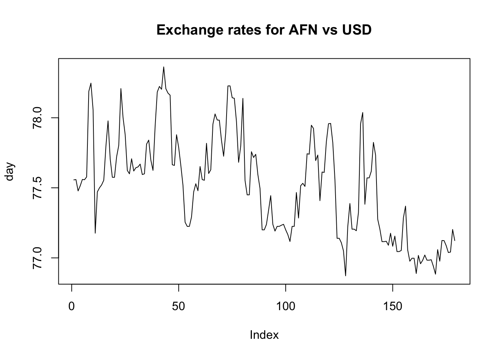
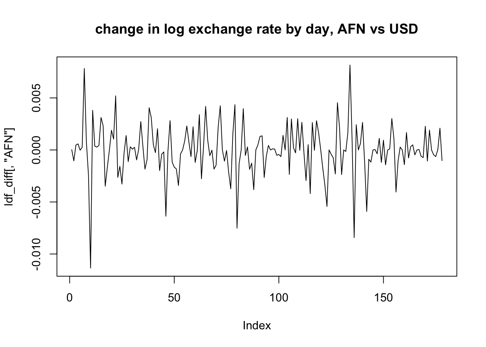
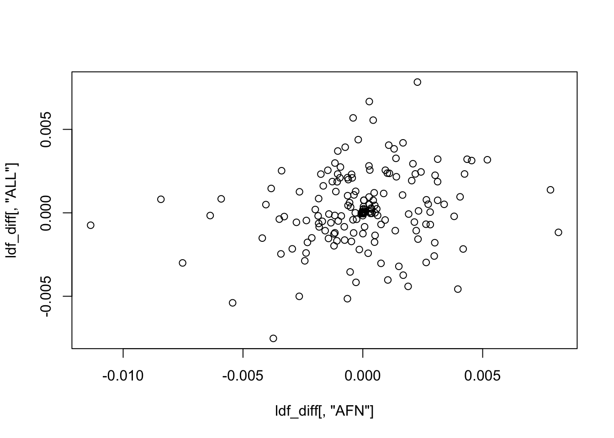

Last updated: 2021-05-22
Checks: 7 0
Knit directory: stat34800/analysis/
This reproducible R Markdown analysis was created with workflowr (version 1.6.2). The Checks tab describes the reproducibility checks that were applied when the results were created. The Past versions tab lists the development history.
Great! Since the R Markdown file has been committed to the Git repository, you know the exact version of the code that produced these results.
Great job! The global environment was empty. Objects defined in the global environment can affect the analysis in your R Markdown file in unknown ways. For reproduciblity it’s best to always run the code in an empty environment.
The command set.seed(20180411) was run prior to running the code in the R Markdown file. Setting a seed ensures that any results that rely on randomness, e.g. subsampling or permutations, are reproducible.
Great job! Recording the operating system, R version, and package versions is critical for reproducibility.
Nice! There were no cached chunks for this analysis, so you can be confident that you successfully produced the results during this run.
Great job! Using relative paths to the files within your workflowr project makes it easier to run your code on other machines.
Great! You are using Git for version control. Tracking code development and connecting the code version to the results is critical for reproducibility.
The results in this page were generated with repository version 4c273ba. See the Past versions tab to see a history of the changes made to the R Markdown and HTML files.
Note that you need to be careful to ensure that all relevant files for the analysis have been committed to Git prior to generating the results (you can use wflow_publish or wflow_git_commit). workflowr only checks the R Markdown file, but you know if there are other scripts or data files that it depends on. Below is the status of the Git repository when the results were generated:
Ignored files:
Ignored: .Rhistory
Ignored: .Rproj.user/
Untracked files:
Untracked: analysis/currency_analysis.Rmd
Untracked: analysis/stocks_analysis.Rmd
Note that any generated files, e.g. HTML, png, CSS, etc., are not included in this status report because it is ok for generated content to have uncommitted changes.
These are the previous versions of the repository in which changes were made to the R Markdown (analysis/currency_read_transform.Rmd) and HTML (docs/currency_read_transform.html) files. If you’ve configured a remote Git repository (see ?wflow_git_remote), click on the hyperlinks in the table below to view the files as they were in that past version.
| File | Version | Author | Date | Message |
|---|---|---|---|---|
| Rmd | 4c273ba | Matthew Stephens | 2021-05-22 | workflowr::wflow_publish(c(“currency_read_transform.Rmd”, “index.Rmd”)) |
In this document I read in some currency data, provide a brief explanation of the data, and illustrate some preliminary transformations one might perform. I had the intention of using these for a homework but my initial analyses suggested the structure in the data are a bit subtle so I decided not to use them in homework for now.
The data were downloaded and saved in the data directory as documented here. They consist of daily exchange rates (vs the US dollar, abbreviated USD) for 191 currencies. Note that the first column is USD itself, so exchange rate is always 1. Note also that the first row is the most recent day, and last row is about 6 months ago; so that the vector of observations is “forwards in time” I reverse the rows here.
df = read.csv("../data/currency.csv")
df = apply(df,2,rev)
head(df) USD AFN ALL DZD ADF ADP AOA AON
[1,] 1 77.55678 100.7960 133.2532 5.375572 136.3534 651.9257 651.9257
[2,] 1 77.55882 100.7908 133.2600 5.372510 136.2758 654.0225 654.0225
[3,] 1 77.47788 101.1647 133.1630 5.375756 136.3581 654.0225 654.0225
[4,] 1 77.51461 101.2862 133.1416 5.400298 136.9806 654.2156 654.2156
[5,] 1 77.55966 101.3104 133.1703 5.400690 136.9906 654.3345 654.3345
[6,] 1 77.55780 101.3107 133.1708 5.400734 136.9917 654.3345 654.3345
ARS AMD AWG AUD ATS AZM AZN BSD BHD
[1,] 94.21951 520.7243 1.800496 1.289106 11.27658 8500 1.7 1 0.376997
[2,] 94.13756 521.1502 1.800197 1.289481 11.27015 8500 1.7 1 0.376964
[3,] 94.09492 521.7294 1.800000 1.282953 11.27696 8500 1.7 1 0.376967
[4,] 94.02003 522.1481 1.800594 1.288658 11.32844 8500 1.7 1 0.377032
[5,] 93.95288 522.8234 1.801000 1.285934 11.32927 8500 1.7 1 0.376959
[6,] 93.95670 522.8194 1.801000 1.286010 11.32936 8500 1.7 1 0.376960
BDT BBD BYR BEF BZD BMD BTN BOB BAM
[1,] 84.77590 2 25133.70 33.05858 2.015282 1 73.12829 6.897928 1.602804
[2,] 84.78186 2 25145.60 33.03974 2.015424 1 73.21202 6.898850 1.601891
[3,] 84.77053 2 25170.96 33.05970 2.015175 1 73.15954 6.897486 1.602859
[4,] 84.72446 2 25188.83 33.21064 2.014188 1 73.33233 6.893684 1.610176
[5,] 84.83234 2 25209.66 33.21305 2.016686 1 73.30200 6.900616 1.610294
[6,] 84.83187 2 25209.66 33.21332 2.016668 1 73.30200 6.900830 1.610306
BWP BRL GBP BND BGN BIF XOF XAF
[1,] 10.72734 5.297747 0.706900 1.332223 1.602804 1971.805 537.5572 537.5572
[2,] 10.72954 5.278371 0.706270 1.332034 1.601891 1971.552 537.2510 537.2510
[3,] 10.74814 5.265288 0.704853 1.330614 1.602859 1971.718 537.5755 537.5755
[4,] 10.78458 5.272674 0.708659 1.335327 1.610176 1972.596 540.0298 540.0298
[5,] 10.80960 5.272562 0.709360 1.332250 1.610294 1973.764 540.0691 540.0691
[6,] 10.81163 5.272575 0.709381 1.332190 1.610306 1973.750 540.0734 540.0734
XPF KHR CAD CVE KYD CLP CNY COP
[1,] 97.79241 4072.802 1.209246 90.36225 0.833333 716.5579 6.436723 3700.721
[2,] 97.73670 4072.059 1.209236 90.31077 0.833333 713.8572 6.433039 3670.309
[3,] 97.79574 4070.862 1.204702 90.36532 0.833333 714.3382 6.426793 3672.671
[4,] 98.24222 4066.541 1.209840 90.77788 0.833333 706.5085 6.439360 3685.499
[5,] 98.24936 4068.980 1.210879 90.78448 0.833333 699.8043 6.437098 3685.404
[6,] 98.25016 4069.000 1.210840 90.78522 0.833333 699.8000 6.437100 3685.403
KMF CDF CRC HRK CUC CUP CYP CZK DKK
[1,] 403.1679 2001.798 615.8054 6.154434 1 25 0.479632 20.89102 6.093880
[2,] 402.9383 2000.393 615.2150 6.152455 1 25 0.479360 20.84736 6.090382
[3,] 403.1817 2000.000 614.4476 6.161482 1 25 0.479648 20.82764 6.094282
[4,] 405.0224 1998.099 614.8929 6.186642 1 25 0.481838 20.94835 6.122161
[5,] 405.0518 1997.000 616.1825 6.188616 1 25 0.481874 20.94929 6.123070
[6,] 405.0551 1997.000 616.1864 6.188550 1 25 0.481878 20.94755 6.123195
DJF DOP NLG XEU XCD ECS EGP SVC EEK
[1,] 177.71 56.91119 1.805942 0.819500 2.7 24840.5 15.68058 8.75 12.82240
[2,] 177.71 56.90120 1.804913 0.819034 2.7 24840.5 15.68065 8.75 12.81510
[3,] 177.71 56.90782 1.806004 0.819528 2.7 24840.5 15.68300 8.75 12.82284
[4,] 177.71 56.84101 1.814248 0.823270 2.7 24840.5 15.68453 8.75 12.88138
[5,] 177.71 56.89765 1.814380 0.823330 2.7 24840.5 15.65758 8.75 12.88231
[6,] 177.71 56.89816 1.814395 0.823337 2.7 24840.5 15.65810 8.75 12.88242
ETB EUR FKP FJD FIM FRF GMD GEL
[1,] 42.71242 0.819500 0.706900 2.039233 4.872530 5.375572 51.18798 3.363998
[2,] 42.63885 0.819034 0.706270 2.033178 4.869754 5.372510 51.18808 3.379678
[3,] 42.52036 0.819528 0.704853 2.034982 4.872696 5.375756 51.17690 3.393392
[4,] 42.58856 0.823270 0.708659 2.038017 4.894942 5.400298 51.20226 3.408282
[5,] 42.48736 0.823330 0.709360 2.045278 4.895298 5.400690 51.22228 3.410000
[6,] 42.48698 0.823337 0.709381 2.045316 4.895338 5.400734 51.22250 3.410000
DEM GHC GHS GIP XAU GRD GTQ GNF
[1,] 1.602804 57677.82 5.767782 0.706900 0.000534 279.2449 7.710186 9869.338
[2,] 1.601891 57625.02 5.762502 0.706270 0.000535 279.0858 7.709926 9870.280
[3,] 1.602859 57635.72 5.763572 0.704853 0.000535 279.2544 7.709894 9868.614
[4,] 1.610176 57616.43 5.761643 0.708659 0.000538 280.5293 7.707170 9853.150
[5,] 1.610294 57653.25 5.765325 0.709360 0.000542 280.5497 7.717958 9873.730
[6,] 1.610306 57650.00 5.765000 0.709381 0.000542 280.5520 7.717856 9873.700
GYD HTG HNL HKD HUF ISK INR IDR
[1,] 209.1105 87.05188 24.04647 7.763339 286.7956 122.6308 73.12829 14379.58
[2,] 209.0722 87.60125 24.04686 7.764738 287.2718 122.9402 73.21202 14362.65
[3,] 209.0374 88.08152 24.03262 7.765632 287.5513 123.4239 73.15954 14305.28
[4,] 209.0013 88.04770 23.99281 7.766873 290.5671 124.3414 73.33233 14313.82
[5,] 209.2866 88.15680 24.09087 7.767422 292.4654 124.2447 73.30200 14270.66
[6,] 209.2864 88.16450 24.09130 7.767430 292.4500 124.2400 73.30200 14271.45
IRR IQD IEP ILS ITL JMD JPY JOD KZT
[1,] 42105 1461.650 0.645409 3.260680 1586.775 149.8701 108.9501 0.709 428.7390
[2,] 42105 1462.068 0.645042 3.262319 1585.871 150.0324 109.0322 0.709 427.7619
[3,] 42105 1461.579 0.645431 3.264721 1586.829 150.2390 108.9985 0.709 426.9841
[4,] 42105 1459.314 0.648378 3.277410 1594.073 150.4282 109.2363 0.709 427.6821
[5,] 42105 1462.500 0.648425 3.274062 1594.189 151.0657 109.3479 0.709 428.2274
[6,] 42105 1462.500 0.648430 3.273965 1594.202 151.0716 109.3480 0.709 428.2387
KES KWD KGS LAK LVL LBP LSL LRD
[1,] 108.1388 0.300718 83.97053 9428.330 0.575948 1507.5 14.03680 171.7004
[2,] 107.8005 0.300666 84.09905 9431.388 0.575620 1507.5 14.04558 171.7383
[3,] 107.4374 0.300708 84.27063 9428.887 0.575968 1507.5 14.02133 171.7457
[4,] 107.2273 0.300955 84.44400 9424.178 0.578598 1507.5 14.13427 171.8291
[5,] 107.1744 0.300976 84.62130 9437.237 0.578640 1507.5 14.12770 171.8775
[6,] 107.1748 0.300975 84.62130 9437.775 0.578644 1507.5 14.12636 171.8775
LYD LTL LUF MOP MKD MGA MGF MWK
[1,] 4.457198 2.829572 33.05858 7.996238 50.57295 3755.133 9150.23 794.2017
[2,] 4.461241 2.827960 33.03974 7.997680 50.57519 3752.808 9150.23 795.0782
[3,] 4.463320 2.829668 33.05970 7.998602 50.64267 3753.923 9150.23 794.6843
[4,] 4.461280 2.842587 33.21064 7.999880 50.75646 3754.364 9150.23 794.7507
[5,] 4.464134 2.842794 33.21305 8.000446 50.91593 3760.029 9150.23 791.2576
[6,] 4.464100 2.842817 33.21332 8.000453 50.91506 3760.066 9150.23 791.2475
MYR MVR MTL MRO MUR MXN MDL MNT
[1,] 4.142705 15.42355 0.351812 359.7297 40.56061 19.89434 17.74316 2623.5
[2,] 4.133092 15.40254 0.351611 359.7235 40.32022 19.88426 17.76962 2623.5
[3,] 4.126302 15.40281 0.351824 359.5122 40.36581 19.79173 17.76119 2623.5
[4,] 4.131724 15.43637 0.353430 359.3081 40.56948 19.86097 17.73571 2623.5
[5,] 4.125562 15.36414 0.353456 359.4493 40.59998 19.86643 17.77700 2623.5
[6,] 4.125500 15.36000 0.353458 359.4497 40.60000 19.86545 17.77699 2623.5
MAD MZM MZN MMK ANG NAD NPR NZD
[1,] 8.821550 59515.18 59.51519 1557.100 1.79 14.03680 116.9628 1.391033
[2,] 8.813168 59265.16 59.26516 1557.100 1.79 14.04558 116.9124 1.389223
[3,] 8.820497 59123.85 59.12385 1557.100 1.79 14.02133 116.8882 1.380269
[4,] 8.844010 58989.00 58.98900 1556.295 1.79 14.13427 117.0193 1.386222
[5,] 8.843872 58900.00 58.90000 1558.259 1.79 14.12770 117.3595 1.379825
[6,] 8.843100 58900.00 58.90000 1558.250 1.79 14.12636 117.3654 1.379750
NIO NGN KPW NOK OMR PKR XPD PAB PGK
[1,] 35.15603 412.2217 135 8.311649 0.384974 153.2944 0.000348 1 3.520750
[2,] 35.18372 409.1693 135 8.274190 0.385006 153.0350 0.000346 1 3.523240
[3,] 35.13374 398.2206 135 8.223113 0.385001 152.8139 0.000344 1 3.511260
[4,] 34.96943 407.1490 135 8.257338 0.384978 152.3677 0.000346 1 3.520340
[5,] 35.12866 411.9694 135 8.222546 0.384999 152.2766 0.000345 1 3.533025
[6,] 35.13375 413.0000 135 8.222345 0.384998 152.2766 0.000345 1 3.533276
PYG PEN PHP XPT PLN PTE QAR ROL
[1,] 6698.824 3.744818 47.88528 0.000830 3.694446 164.2951 3.641413 40383.89
[2,] 6700.672 3.743728 47.84429 0.000826 3.704386 164.2015 3.641385 40357.08
[3,] 6694.352 3.720226 47.85302 0.000814 3.707853 164.3007 3.641365 40376.38
[4,] 6704.468 3.673320 47.86392 0.000810 3.730151 165.0508 3.644196 40545.74
[5,] 6718.768 3.674190 47.75205 0.000816 3.728934 165.0628 3.641310 40552.95
[6,] 6719.506 3.674225 47.75250 0.000816 3.729000 165.0642 3.641000 40552.00
RON RUB RWF WST STD SAR RSD SCR
[1,] 4.038388 73.64353 993.5404 2.530148 20378.26 3.750253 96.36945 16.45752
[2,] 4.035708 73.72729 991.5044 2.528604 20369.99 3.750280 96.31474 16.42289
[3,] 4.037638 73.74271 988.1382 2.522324 20392.76 3.750382 96.40298 16.42513
[4,] 4.054574 73.94881 994.9013 2.517404 20329.23 3.750486 96.77238 16.17678
[5,] 4.055295 73.99747 992.6871 2.527096 20391.65 3.750408 96.92855 15.72514
[6,] 4.055200 73.99470 992.6050 2.528142 20392.12 3.750400 96.92452 15.72420
SLL XAG SGD SKK SIT SBD SOS ZAR
[1,] 10230.05 0.036024 1.332223 24.68828 196.3852 7.965492 581.5898 14.03680
[2,] 10225.00 0.035889 1.332034 24.67421 196.2733 7.969700 581.5667 14.04558
[3,] 10227.48 0.035272 1.330614 24.68912 196.3918 7.979942 581.5441 14.02133
[4,] 10242.37 0.035928 1.335327 24.80184 197.2885 7.982973 581.1441 14.13427
[5,] 10250.00 0.036462 1.332250 24.80364 197.3028 7.984064 582.1876 14.12770
[6,] 10250.00 0.036467 1.332190 24.80384 197.3044 7.984064 582.2289 14.12636
KRW ESP LKR SHP SDD SDP SDG SRD
[1,] 1130.361 136.3534 196.9753 0.706900 40999.51 2266.65 409.9951 14.15400
[2,] 1129.054 136.2758 197.0221 0.706270 40847.04 2266.65 408.4704 14.15400
[3,] 1129.264 136.3581 197.0104 0.704853 40826.94 2266.65 408.2694 14.15400
[4,] 1135.601 136.9806 196.9446 0.708659 40812.16 2266.65 408.1216 14.15398
[5,] 1126.497 136.9906 196.9698 0.709360 40800.00 2266.65 408.0000 14.15400
[6,] 1126.493 136.9917 196.9724 0.709381 40800.00 2266.65 408.0000 14.15400
SRG SZL SEK CHF SYP TWD TZS THB
[1,] 14154.00 14.03680 8.327872 0.900728 512.795 27.96137 2318.664 31.38183
[2,] 14154.00 14.04558 8.317144 0.900548 512.795 27.94036 2319.020 31.41830
[3,] 14154.00 14.02133 8.298836 0.898838 512.795 27.95758 2318.991 31.44006
[4,] 14153.97 14.13427 8.340154 0.902029 512.795 28.08714 2318.873 31.45640
[5,] 14154.00 14.12770 8.329378 0.901558 512.795 27.97343 2318.409 31.35064
[6,] 14154.00 14.12636 8.329585 0.901545 512.795 27.97330 2318.407 31.34950
TOP TTD TND TRL TRY TMM UGX UAH
[1,] 2.249430 6.785717 2.714850 8384065 8.384065 17523.44 3562.015 27.46098
[2,] 2.243332 6.786620 2.714586 8392245 8.392246 17524.70 3552.262 27.42975
[3,] 2.247420 6.787789 2.719452 8340242 8.340242 17540.30 3535.741 27.46723
[4,] 2.248110 6.784912 2.723762 8362324 8.362324 17515.10 3533.656 27.56587
[5,] 2.256693 6.787036 2.719462 8447731 8.447732 17522.81 3535.256 27.59006
[6,] 2.257036 6.786424 2.718850 8447150 8.447150 17524.88 3534.842 27.58645
UYU AED VUV VEB VND YER YUN ZMK
[1,] 44.10860 3.673120 113.14 2.963429e+14 23048.51 250.0295 96.36945 5252.55
[2,] 44.17758 3.673159 113.14 2.957987e+14 23046.32 250.0085 96.31474 5252.55
[3,] 44.19156 3.673102 113.14 2.955092e+14 23042.88 250.0219 96.40298 5252.55
[4,] 44.12632 3.673106 113.14 2.937512e+14 23048.14 250.0233 96.77238 5252.55
[5,] 44.12110 3.673090 113.14 2.921017e+14 23051.52 250.0223 96.92855 5252.55
[6,] 44.12754 3.673100 113.14 2.920765e+14 23051.50 250.0225 96.92452 5252.55
ZWD
[1,] 374.8
[2,] 374.8
[3,] 374.8
[4,] 374.8
[5,] 374.8
[6,] 374.8You can find the meanings for the abbreviations using the quantmod library:
currency_table = quantmod::oanda.currenciesRegistered S3 method overwritten by 'quantmod':
method from
as.zoo.data.frame zoo currency_table oanda.df.1.length.oanda.df...2....1.
USD US Dollar
AFN Afghanistan Afghani
ALL Albanian Lek
DZD Algerian Dinar
ADF Andorran Franc
ADP Andorran Peseta
AOA Angolan Kwanza
AON Angolan New Kwanza
ARS Argentine Peso
AMD Armenian Dram
AWG Aruban Florin
AUD Australian Dollar
ATS Austrian Schilling
AZM Azerbaijan Manat
AZN Azerbaijan New Manat
BSD Bahamian Dollar
BHD Bahraini Dinar
BDT Bangladeshi Taka
BBD Barbados Dollar
BYR Belarusian Ruble
BEF Belgian Franc
BZD Belize Dollar
BMD Bermudian Dollar
BTN Bhutan Ngultrum
BOB Bolivian Boliviano
BAM Bosnian Mark
BWP Botswana Pula
BRL Brazilian Real
GBP British Pound
BND Brunei Dollar
BGN Bulgarian Lev
BIF Burundi Franc
XOF CFA Franc BCEAO
XAF CFA Franc BEAC
XPF CFP Franc
KHR Cambodian Riel
CAD Canadian Dollar
CVE Cape Verde Escudo
KYD Cayman Islands Dollar
CLP Chilean Peso
CNY Chinese Yuan Renminbi
COP Colombian Peso
KMF Comoros Franc
CDF Congolese Franc
CRC Costa Rican Colon
HRK Croatian Kuna
CUC Cuban Convertible Peso
CUP Cuban Peso
CYP Cyprus Pound
CZK Czech Koruna
DKK Danish Krone
DJF Djibouti Franc
DOP Dominican R. Peso
NLG Dutch Guilder
XEU ECU
XCD East Caribbean Dollar
ECS Ecuador Sucre
EGP Egyptian Pound
SVC El Salvador Colon
EEK Estonian Kroon
ETB Ethiopian Birr
EUR Euro
FKP Falkland Islands Pound
FJD Fiji Dollar
FIM Finnish Markka
FRF French Franc
GMD Gambian Dalasi
GEL Georgian Lari
DEM German Mark
GHC Ghanaian Cedi
GHS Ghanaian New Cedi
GIP Gibraltar Pound
XAU Gold (oz.)
GRD Greek Drachma
GTQ Guatemalan Quetzal
GNF Guinea Franc
GYD Guyanese Dollar
HTG Haitian Gourde
HNL Honduran Lempira
HKD Hong Kong Dollar
HUF Hungarian Forint
ISK Iceland Krona
INR Indian Rupee
IDR Indonesian Rupiah
IRR Iranian Rial
IQD Iraqi Dinar
IEP Irish Punt
ILS Israeli New Shekel
ITL Italian Lira
JMD Jamaican Dollar
JPY Japanese Yen
JOD Jordanian Dinar
KZT Kazakhstan Tenge
KES Kenyan Shilling
KWD Kuwaiti Dinar
KGS Kyrgyzstanian Som
LAK Lao Kip
LVL Latvian Lats
LBP Lebanese Pound
LSL Lesotho Loti
LRD Liberian Dollar
LYD Libyan Dinar
LTL Lithuanian Litas
LUF Luxembourg Franc
MOP Macau Pataca
MKD Macedonian Denar
MGA Malagasy Ariary
MGF Malagasy Franc
MWK Malawi Kwacha
MYR Malaysian Ringgit
MVR Maldive Rufiyaa
MTL Maltese Lira
MRO Mauritanian Ouguiya
MUR Mauritius Rupee
MXN Mexican Peso
MDL Moldovan Leu
MNT Mongolian Tugrik
MAD Moroccan Dirham
MZM Mozambique Metical
MZN Mozambique New Metical
MMK Myanmar Kyat
ANG NL Antillian Guilder
NAD Namibia Dollar
NPR Nepalese Rupee
NZD New Zealand Dollar
NIO Nicaraguan Cordoba Oro
NGN Nigerian Naira
KPW North Korean Won
NOK Norwegian Kroner
OMR Omani Rial
PKR Pakistan Rupee
XPD Palladium (oz.)
PAB Panamanian Balboa
PGK Papua New Guinea Kina
PYG Paraguay Guarani
PEN Peruvian Nuevo Sol
PHP Philippine Peso
XPT Platinum (oz.)
PLN Polish Zloty
PTE Portuguese Escudo
QAR Qatari Rial
ROL Romanian Lei
RON Romanian New Lei
RUB Russian Rouble
RWF Rwandan Franc
WST Samoan Tala
STD Sao Tome/Principe Dobra
SAR Saudi Riyal
RSD Serbian Dinar
SCR Seychelles Rupee
SLL Sierra Leone Leone
XAG Silver (oz.)
SGD Singapore Dollar
SKK Slovak Koruna
SIT Slovenian Tolar
SBD Solomon Islands Dollar
SOS Somali Shilling
ZAR South African Rand
KRW South-Korean Won
ESP Spanish Peseta
LKR Sri Lanka Rupee
SHP St. Helena Pound
SDD Sudanese Dinar
SDP Sudanese Old Pound
SDG Sudanese Pound
SRD Suriname Dollar
SRG Suriname Guilder
SZL Swaziland Lilangeni
SEK Swedish Krona
CHF Swiss Franc
SYP Syrian Pound
TWD Taiwan Dollar
TZS Tanzanian Shilling
THB Thai Baht
TOP Tonga Pa'anga
TTD Trinidad/Tobago Dollar
TND Tunisian Dinar
TRL Turkish Lira
TRY Turkish New Lira
TMM Turkmenistan Manat
UGX Uganda Shilling
UAH Ukraine Hryvnia
UYU Uruguayan Peso
AED Utd. Arab Emir. Dirham
VUV Vanuatu Vatu
VEB Venezuelan Bolivar
VND Vietnamese Dong
YER Yemeni Rial
YUN Yugoslav Dinar
ZMK Zambian Kwacha
ZWD Zimbabwe DollarWe are going to use these data to look at covariances of the change in exchange rates. Of course, for a given currency, the exchange rate from one day to the next tend to be similar – that is the time series will show strong autocorrelation. Here’s an example time series for the Afghanistan Afghani (AFN):
plot(df[,"AFN"],type="l", main="Exchange rates for AFN vs USD",ylab="day")
On the other hand, one might expect the changes in exchange rate from day to day to be less correlated. So I suggest analysing the changes from day to day. Also these data are positive, and it makes sense to measure changes on a multiplicative scale, so I will take the log and the look at the differences.
ldf = log(df)
ldf_diff = apply(ldf,2,diff)
plot(ldf_diff[,"AFN"], type="l", main = "change in log exchange rate by day, AFN vs USD")
And we can look at how correlated these are between currencies. Eg when the AFN goes up vs the dollar, does the Albanian Lek (ALL) also go up vs dollar? Maybe there is a hint of a positive correlation here? (One might expect a correlation as they are both being measured against the same thing, the USD… if something happens to weaken the USD then maybe both would go up….)
plot(ldf_diff[,"AFN"], ldf_diff[,"ALL"])
cor(ldf_diff[,"AFN"], ldf_diff[,"ALL"])[1] 0.1894699
sessionInfo()R version 3.6.0 (2019-04-26)
Platform: x86_64-apple-darwin15.6.0 (64-bit)
Running under: macOS 10.16
Matrix products: default
BLAS: /Library/Frameworks/R.framework/Versions/3.6/Resources/lib/libRblas.0.dylib
LAPACK: /Library/Frameworks/R.framework/Versions/3.6/Resources/lib/libRlapack.dylib
locale:
[1] en_US.UTF-8/en_US.UTF-8/en_US.UTF-8/C/en_US.UTF-8/en_US.UTF-8
attached base packages:
[1] stats graphics grDevices utils datasets methods base
loaded via a namespace (and not attached):
[1] Rcpp_1.0.6 rstudioapi_0.13 whisker_0.4 knitr_1.29
[5] magrittr_1.5 workflowr_1.6.2 lattice_0.20-41 R6_2.4.1
[9] rlang_0.4.10 TTR_0.24.2 stringr_1.4.0 xts_0.12.1
[13] tools_3.6.0 grid_3.6.0 quantmod_0.4.18 xfun_0.16
[17] git2r_0.27.1 htmltools_0.5.0 ellipsis_0.3.1 yaml_2.2.1
[21] digest_0.6.27 rprojroot_1.3-2 tibble_3.0.4 lifecycle_1.0.0
[25] crayon_1.3.4 later_1.1.0.1 vctrs_0.3.8 fs_1.5.0
[29] promises_1.1.1 curl_4.3 glue_1.4.2 evaluate_0.14
[33] rmarkdown_2.3 stringi_1.4.6 compiler_3.6.0 pillar_1.4.6
[37] backports_1.1.10 httpuv_1.5.4 zoo_1.8-8 pkgconfig_2.0.3